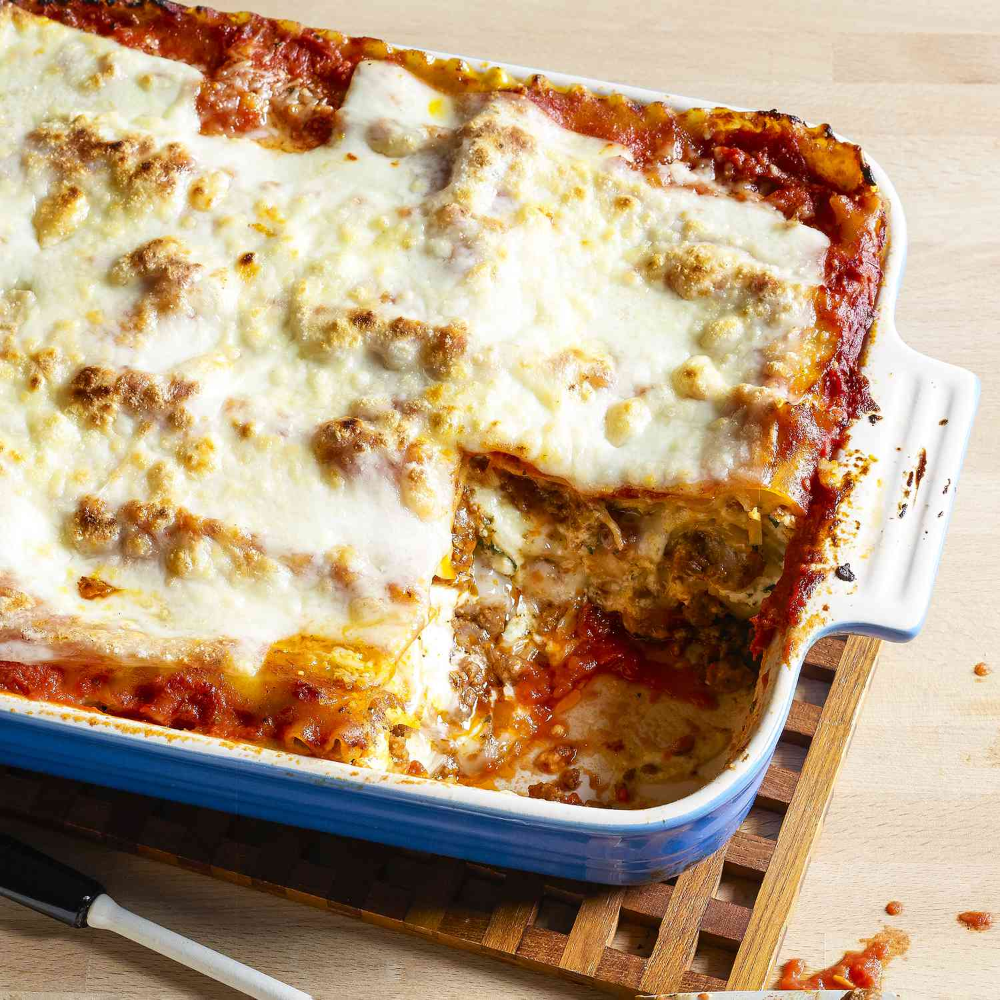

Lasagna Recipe

Description
Lasagna also known as lasagne is a type of pasta, possibly one of the oldest types, made of very wide, flat sheets. Either term can also refer to an Italian dish made of stacked layers of lasagna alternating with fillings such as ragu (ground meats and tomato sauce), vegetables, cheeses (which may include ricotta, mozzarella, and parmesan), and seasonings and spices, like Italian seasoning, such as garlic, oregano and basil. The dish may be topped with grated cheese, which becomes melted after baking.
Typically cooked pasta is assembled with the other ingredients and then baked in an oven. The resulting baked pasta is cut into single-serving square portions.
Ingredients
- 1 ½ pounds ground Italian sausage (or you can do half sausage + half ground beef)
- 1 medium white or yellow onion, peeled and diced
- 6 large garlic cloves, peeled and minced
- 3 tablespoons tomato paste
- 1/2 teaspoon crushed red pepper flakes
- 1/2 cup dry red wine (or beef stock)
Steps
- Make the sauce: Follow the sauce instructions and then let it simmer until the liquid has reduced about by half. You want the sauce to still be a bit juicy (so that it will cook the noodles), but not super liquidy. Meanwhile…
- Make the cheese mixture: Stir together the ricotta, Parmesan, basil and egg until combined.
- Prep oven and baking dish: Heat the oven to 375°F and mist a 9 x 13-inch baking dish with cooking spray.
- Bake: Loosely tent aluminum foil to cover the pan (try to avoid touching the cheese). Bake for 45 minutes covered, followed by another 15-20 minutes uncovered, until the cheese is melty and golden. Transfer pan to a wire baking rack to cool for 5 minutes.
- Serve: Sprinkle on your desired toppings, slice, serve warm, and dig in!